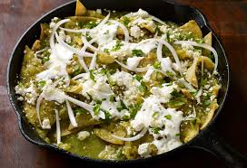

Desde los tacos de la esquina hasta la alta cocina internacional.
Sección 1: Los Platillos Típicos que Debes Probar
La gastronomía mexicana es Patrimonio de la Humanidad. Cuando visites la CDMX, asegúrate de pedir:
Tacos al Pastor: Carne de cerdo adobada, cocinada en un trompo, servida en tortillas de maíz con cebolla, cilantro, salsa y su indispensable trozo de piña.
Chilaquiles: Totopos de maíz bañados en salsa verde o roja picante, acompañados de crema, queso, cebolla y usualmente pollo o huevo. El desayuno de los campeones.

Torta de Tamal (Guajolota): El desayuno callejero por excelencia de los locales; un tamal calientito dentro de un pan bolillo. ¡Pura energía para caminar!